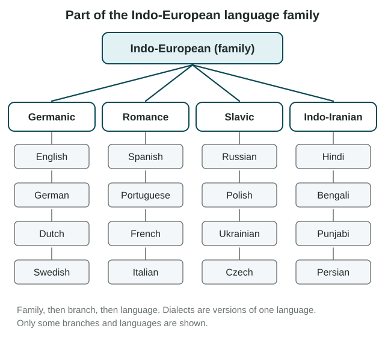
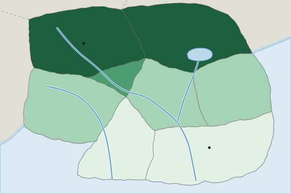

Diffusion of Religion and Language
Languages and religions spread from hearths, and maps, charts and place names show their paths.
Part 1 · Hook
Why this matters
Part 2 · Before you start
What this builds on
Part 3 · Prerequisite check
Quick check before you start
1. People move and carry a trait to a new place. What kind of diffusion is this?
- Relocation diffusion
- Contagious diffusion
- Hierarchical diffusion
- Stimulus diffusion
Show the answer
Relocation diffusion happens when people who hold a trait move and take it with them.
- Correct: Relocation diffusion:
- Contagious diffusion:
- Hierarchical diffusion:
- Stimulus diffusion:
2. Portuguese is spoken in Brazil mainly because of what?
- Colonialism
- Cultural divergence
- Placemaking
- Distance decay
Show the answer
Portugal ruled Brazil from the 1500s until 1822 and made Portuguese its language of government and schools.
- Correct: Colonialism:
- Cultural divergence:
- Placemaking:
- Distance decay:
Part 4 · See it
See it first

Part 5 · Step by step
How it works, step by step
- A language or religion begins in a hearthit can spread outward by expansion or travel with migrants by relocation
- Speakers of one ancient language spread out and lost contact over centuriestheir speech split into branches and languages that form one language family
- A universalizing religion seeks followers from any groupit spreads by expansion and relocation, far from its hearth
- An ethnic religion is tied to one people and homelandit mostly stays near its hearth, or spreads by relocation when followers move
Part 6 · Key ideas
Key ideas
- A language family is a group of languages that grew from one ancient ancestor. Indo-European is the largest by speakers and includes branches such as Germanic (English), Romance (Spanish) and Indo-Iranian (Hindi).
- A dialect is a regional version of one language, such as the Spanish of Mexico City and of Madrid. A toponym is a place name, and names such as Santa Fe record who settled a place.
- AP® Human Geography classes Christianity, Islam, Buddhism and Sikhism as universalizing religions: they seek followers anywhere and spread by expansion and relocation.
- It classes Hinduism and Judaism as ethnic religions: tied to one people and place, they mostly stay near the hearth or spread by relocation. These are AP® Human Geography labels; followers may not use them.
Part 7 · Misconception
A common mistake
The wrong idea: Ethnic religions never spread beyond their hearth.
What actually happens: They spread mainly by relocation. Hindu temples stand in London and Toronto, and Jewish communities live from New York to Buenos Aires, because followers moved and carried their religion with them.
Part 8 · Check yourself
Check yourself
Exam-style questions. Anything you miss goes into your review queue.
Map
Language B by province of Country A

People who speak Language B at home (percent, invented)
- Under 10%
- 10% to 49%
- 50% to 89%
- 90% or more
1. Which statement best describes where Language B is spoken at home?
- Mostly in the north, falling toward the south
- Mostly along the South Coast, falling toward the north
- Evenly in each province, at about half the people
- Mostly in the Capital Region and nowhere else
Show the answer
the Northern Hills and Lake District are 90% or more, the middle provinces are lower, and the Southern Forest and South Coast are under 10%.
- Correct: Mostly in the north, falling toward the south: Right: the Northern Hills and Lake District are 90% or more, the middle provinces are lower, and the Southern Forest and South Coast are under 10%.
- Mostly along the South Coast, falling toward the north: The South Coast is in the lowest class, under 10%. The highest shares are in the north.
- Evenly in each province, at about half the people: The shares range from under 10% to 90% or more, so the pattern is uneven.
- Mostly in the Capital Region and nowhere else: The Capital Region is in the 10% to 49% class; the north has far higher shares.
2. Which province is most likely a zone where speakers of both languages mix every day?
- The Northern Hills, at 90% or more
- The Central Valley, at 50% to 89%
- The South Coast, at under 10%
- The Lake District, at 90% or more
Show the answer
a province with a large share of Language B speakers and many speakers of other languages sits between the two language areas, where they mix.
- The Northern Hills, at 90% or more: Almost everyone there speaks Language B at home, so mixing is limited.
- Correct: The Central Valley, at 50% to 89%: Right: a province with a large share of Language B speakers and many speakers of other languages sits between the two language areas, where they mix.
- The South Coast, at under 10%: Very few people there speak Language B at home, so there is little mixing.
- The Lake District, at 90% or more: Like the Northern Hills, it is almost all Language B, not a mixed zone.
3. A national report says, "Country A is a bilingual country." What does the province map show that this national statement hides?
- Language B is spoken by no one in Country A
- Each person in Country A speaks both languages
- The two languages sit in separate regions
- Language B is spoken mostly in the south
Show the answer
at the national scale both languages are present, but at the subnational scale they are concentrated in different regions, which matters for schools, signs and politics.
- Language B is spoken by no one in Country A: The map shows Language B as the home language of 90% or more in two provinces.
- Each person in Country A speaks both languages: The map shows the share speaking Language B at home, which differs by province; it does not show that everyone speaks both.
- Correct: The two languages sit in separate regions: Right: at the national scale both languages are present, but at the subnational scale they are concentrated in different regions, which matters for schools, signs and politics.
- Language B is spoken mostly in the south: Language B is concentrated in the north.
4. Which statement correctly compares universalizing and ethnic religions?
- Ethnic religions have more followers than universalizing religions
- Universalizing religions are older than ethnic religions
- Universalizing ones seek converts anywhere; ethnic ones do not
- Ethnic religions spread mainly by expansion, not relocation
Show the answer
universalizing religions welcome followers from any place or group and spread widely. Ethnic religions are tied to one people and their homeland, and spread mostly when followers move.
- Ethnic religions have more followers than universalizing religions: The size of a religion is not the difference; the difference is whether it seeks followers beyond one group.
- Universalizing religions are older than ethnic religions: Age is not the difference; Hinduism and Judaism are older than several universalizing religions.
- Correct: Universalizing ones seek converts anywhere; ethnic ones do not: Right: universalizing religions welcome followers from any place or group and spread widely. Ethnic religions are tied to one people and their homeland, and spread mostly when followers move.
- Ethnic religions spread mainly by expansion, not relocation: Ethnic religions spread mostly by relocation, when followers migrate.
5. Sikhism began in the Punjab region of South Asia in the late 1400s. Large Sikh gurdwaras (places of worship) now stand in Surrey, British Columbia, and Brampton, Ontario, in Canada. How did Sikhism mainly reach these cities?
- Contagious diffusion, from Punjab to its neighbors across the ocean
- Stimulus diffusion, as Canadians invented a new religion
- Hierarchical diffusion, as Canada's government adopted Sikhism
- Relocation diffusion, as Sikh families migrated to Canada
Show the answer
the religion traveled with people who moved from Punjab to Canada, often through chain migration. That is relocation diffusion.
- Contagious diffusion, from Punjab to its neighbors across the ocean: Canada is not next to Punjab; the religion did not ripple outward through nearby places.
- Stimulus diffusion, as Canadians invented a new religion: The gurdwaras serve Sikhism itself, carried by migrants, not a new religion.
- Hierarchical diffusion, as Canada's government adopted Sikhism: Canada's government did not adopt the religion; families brought it.
- Correct: Relocation diffusion, as Sikh families migrated to Canada: Right: the religion traveled with people who moved from Punjab to Canada, often through chain migration. That is relocation diffusion.
6. Place each name at its level, from the largest group of languages at the top to the smallest at the bottom.
Language family to dialect
- Language family
- Branch
- Language
- Dialect
Pick a piece, then the place it belongs. Drag works too. Pick a filled place to take its piece back.
Show the answer
Family, then branch, then language, then dialect: Indo-European, Romance, Spanish, Mexican Spanish.
- Language family: Indo-European
- Branch: Romance
- Language: Spanish
- Dialect: Mexican Spanish
Part 9 · Summary
Summary
Part 10 · Up next
What comes next
Part 11 · Connections